Socorro 24 horas
Porta de loja travada, portão que não abre, porta de enrolar com problema: atendemos de madrugada e no domingo.
Serralheria 24 horas na Mooca. Socorro de portas e portões, grades, portas de aço e projetos sob medida, do WhatsApp à instalação em poucos dias.
Serralheria na Mooca com atendimento 24 horas: socorro de portas e portões, grades, portas de aço, escadas, coberturas e projetos sob medida. Nota 5,0 com 154 avaliações no Google.
Porta de loja travada, portão que não abre, porta de enrolar com problema: atendemos de madrugada e no domingo.
Portões de correr e portas sociais em metalon galvanizado, chapa perfurada e gradil.
Grades de janela com pintura eletrostática e telas metálicas com trava para apartamento.
Portas automáticas para comércio, troca de motor, cortina e cabos de aço.
Escadas metálicas, guarda-corpos, coberturas e estrutura para painéis solares.
Portas de correr e divisórias com vidro canelado, cristaleiras e armários em ferro.
Quatro passos, sem surpresa: você sabe o valor e o prazo antes de começar.
Mande fotos e medidas, a qualquer hora.
Valor e prazo combinados antes de começar.
Peça feita na medida, com pintura eletrostática, automotiva ou zarcão.
A equipe instala e deixa tudo funcionando.
Fotos dos próprios trabalhos da empresa, tiradas de suas redes.
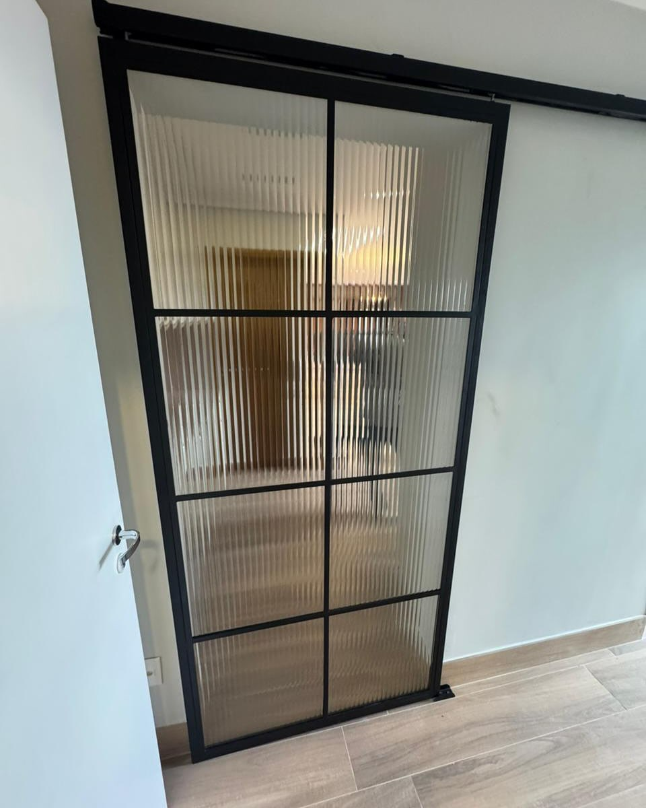
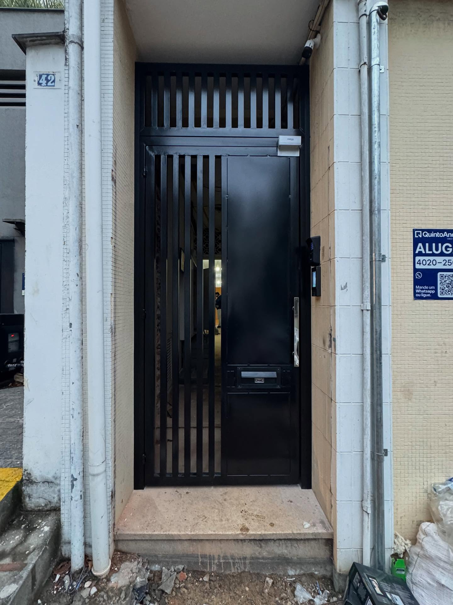
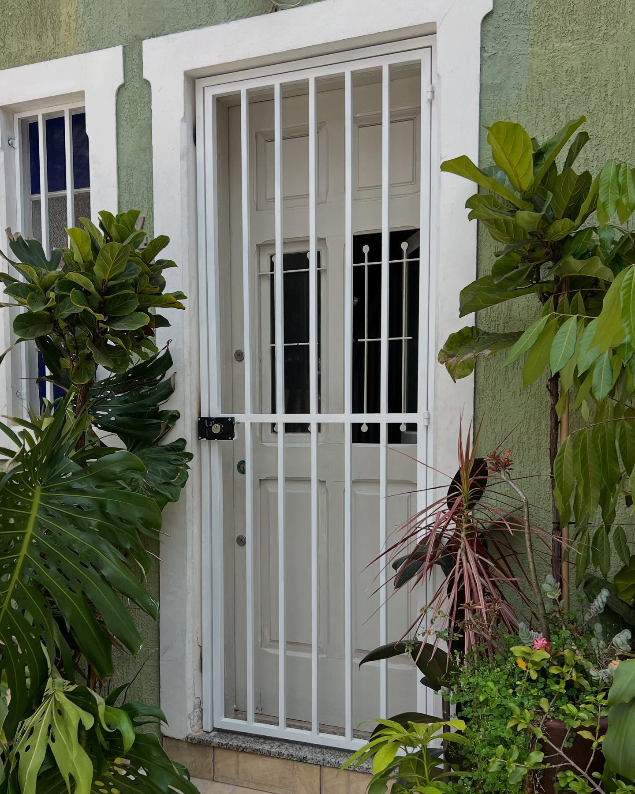
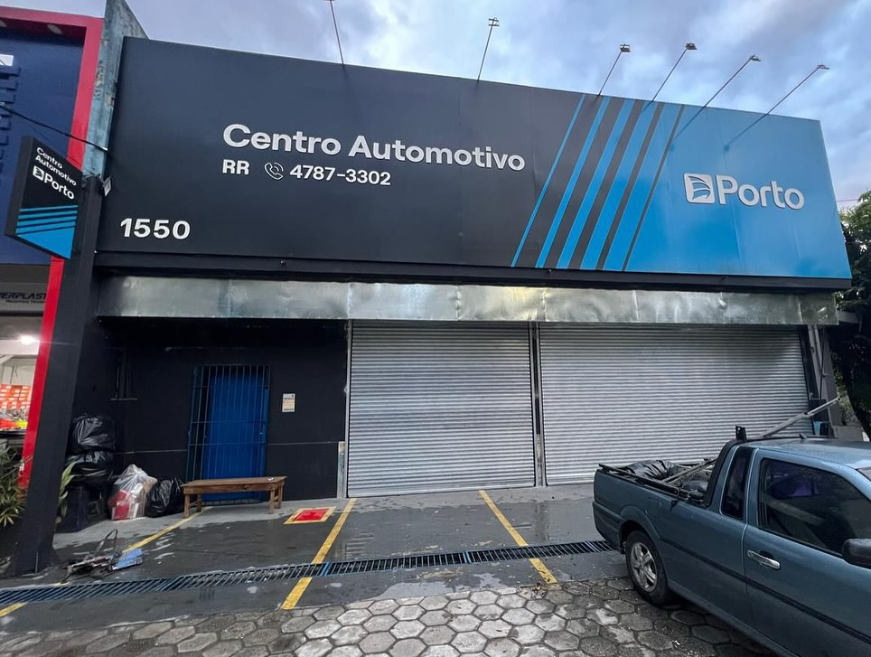
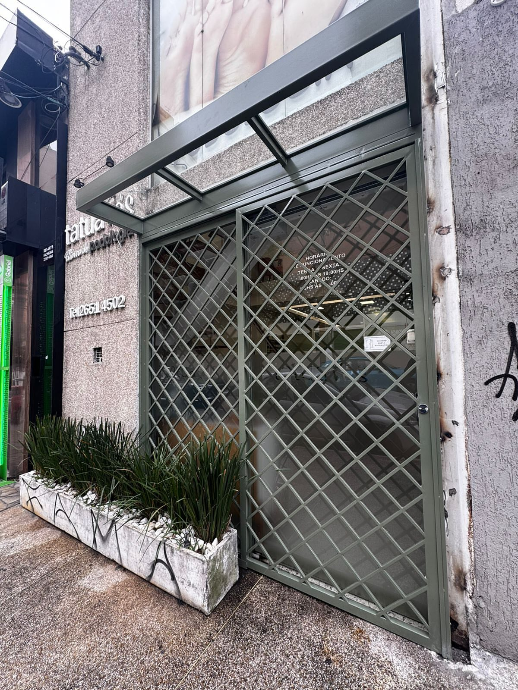
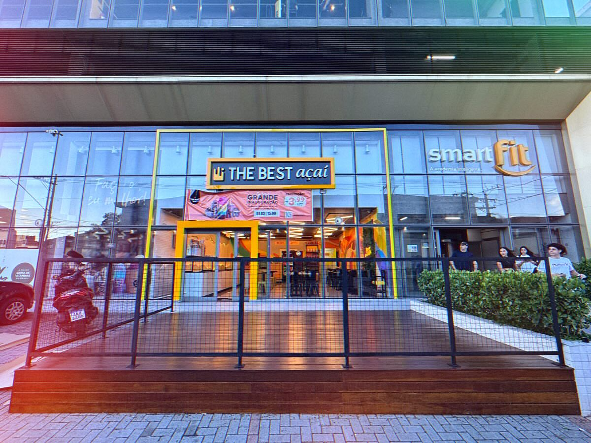
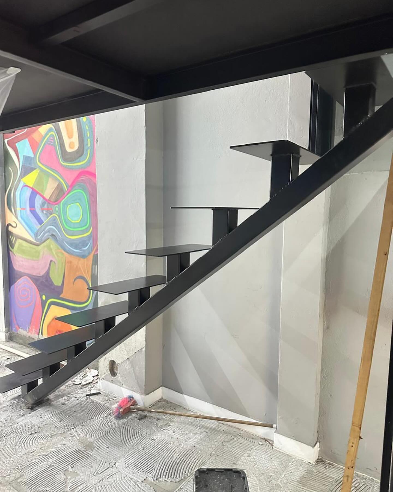
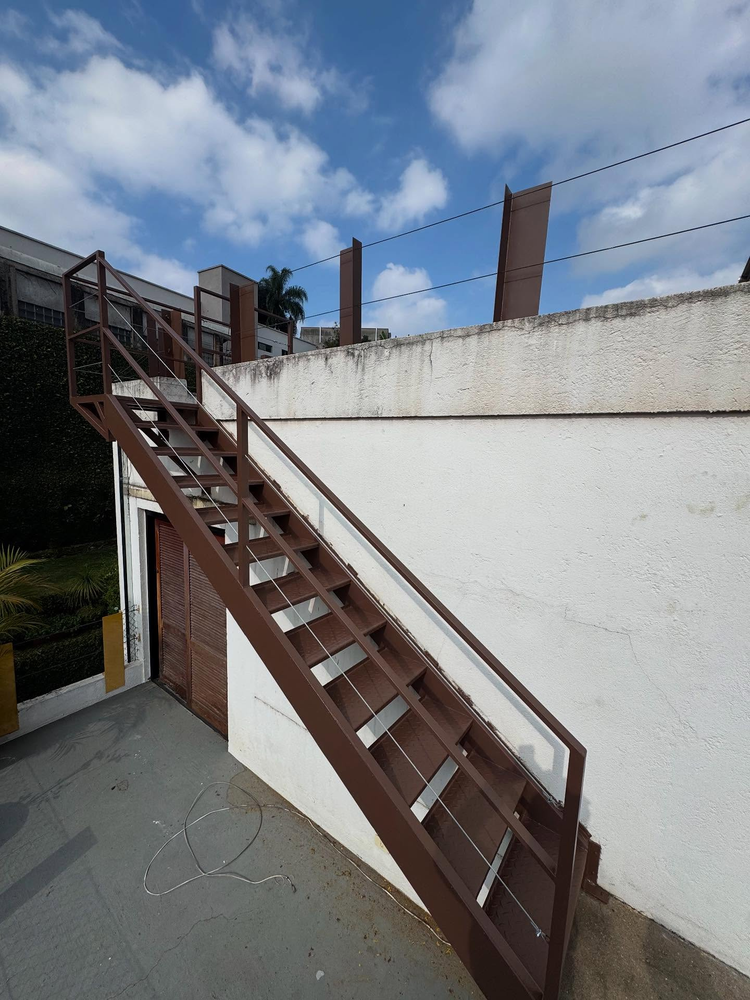
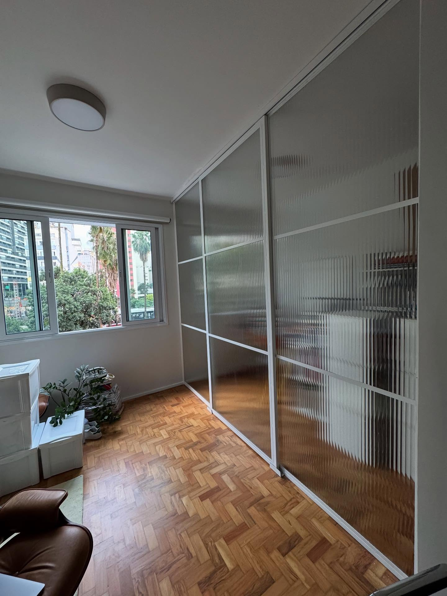
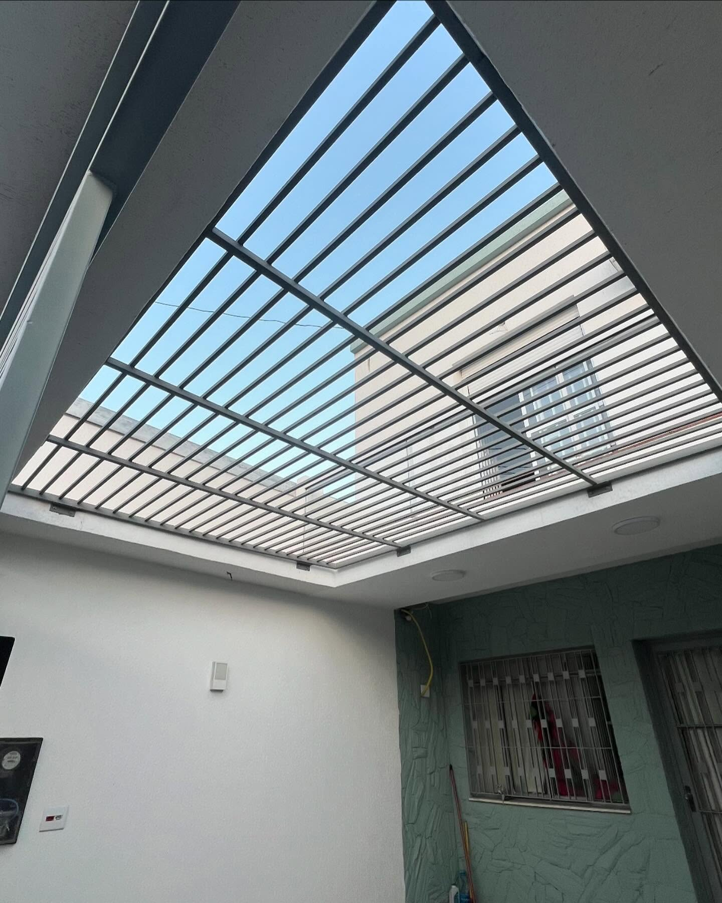
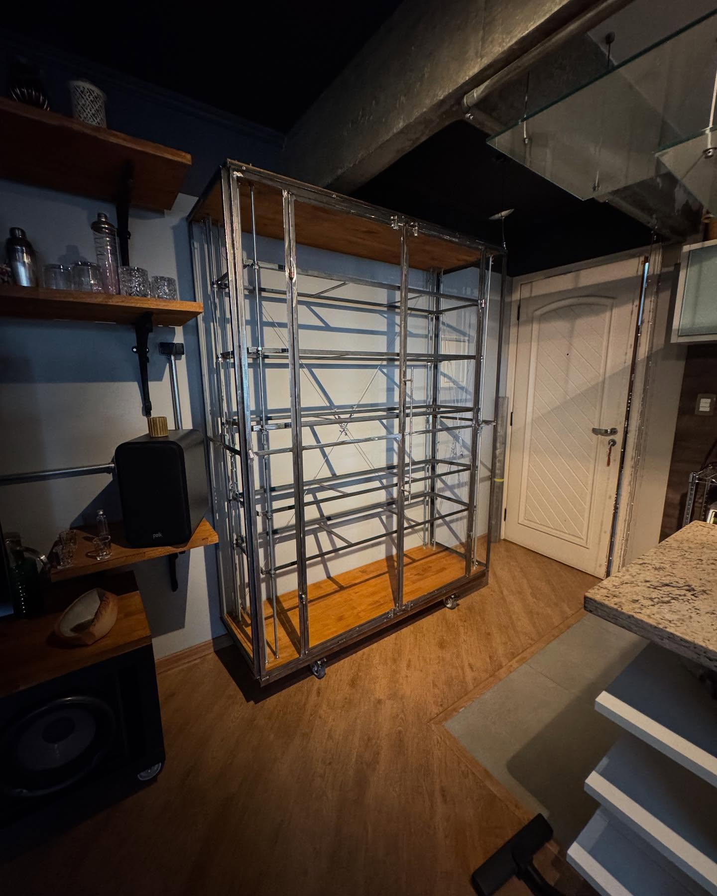
154 avaliações no Google. Citadas como foram escritas, sem o nome de quem avaliou.
“Domingo, desespero total pra abrir o restaurante, eles vieram, fizeram um serviço excelente e um preço justo. Recomendo muito”Cliente no Google, set/2025
“Trabalho muito bem feito, chamei em uma urgência na madrugada, atenderam super bem e resolveram o problema da porta da loja, super indico”Cliente no Google, set/2025
“Em pouquíssimos dias os meninos fizeram um portão impecável, mil vezes melhor do que imaginei que pudesse ficar. Assim que foi instalado, minha vizinha até veio perguntar qual empresa fez”Cliente no Google, ago/2024
“Serviço impecável, desde o atendimento no whatsapp até a instalação, tudo em menos de uma semana!”Cliente no Google, set/2024
“As telas ficaram bonitas, delicadas, e o principal, a segurança dos pets está garantida.”Cliente no Google, jul/2024
“Serviço rápido, caprichado, instalação antes do prazo, sem enrolação alguma.”Cliente no Google, nov/2024
Sim. O atendimento é 24 horas, todos os dias, inclusive para socorro de portas de loja e portões travados.
Depende do serviço. Nas avaliações, clientes contam grades instaladas dois dias depois do pedido; o prazo exato vem no orçamento.
Sim: fabricação, instalação, troca de motor, cortina e cabos de aço.
Sim, telas metálicas que abrem, com trava, inclusive para janelas basculantes.
Mande fotos e medidas pelo WhatsApp ou pelo formulário desta página.
Porta travada, portão que não abre ou um pedido novo: mande fotos e medidas pelo WhatsApp.